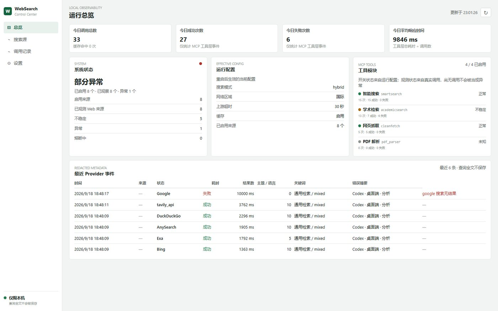
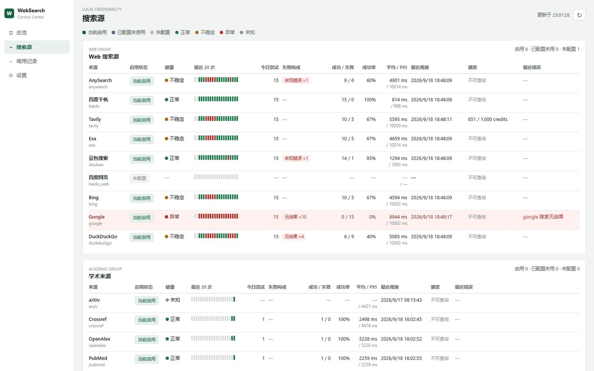
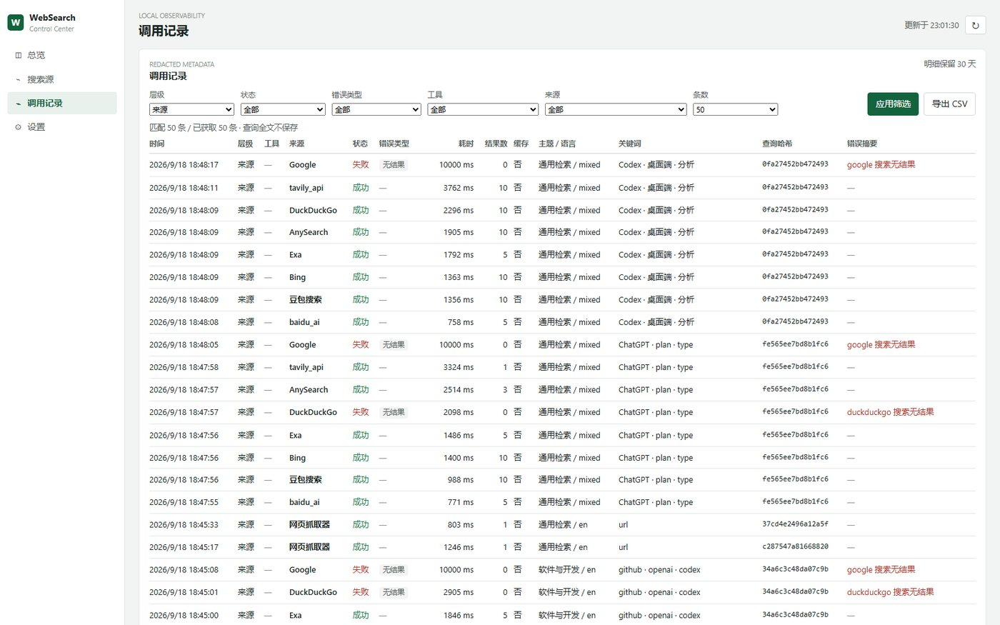
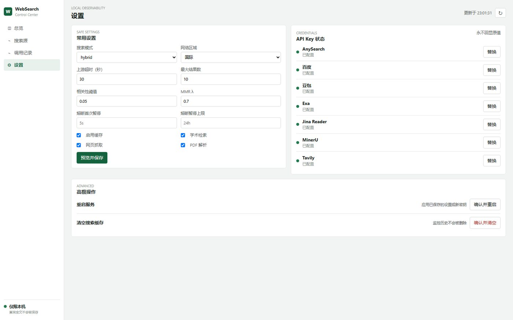

Failure semantics
Failures are classified as rate limit, captcha, access denied, timeout, network, parse, no result or unknown, with per-source failure composition and p95 latency.
LOCAL OBSERVABILITY
An optional, disabled-by-default control center for websearch-mcpserver. It passively records every tool and provider call, explains why calls fail, tracks source health and circuit-breaker state, and keeps a request-level call chain. No active probing, no raw query storage.
dashboard.enabled: false; it does not change the four MCP tools' parameters, responses or call paths.
Upstream functionality, documentation and release process stay untouched, and credit for them belongs to the original author.
One direction only: real calls produce events, events drive the console, the console never triggers a search.
Failures are classified as rate limit, captcha, access denied, timeout, network, parse, no result or unknown, with per-source failure composition and p95 latency.
Health is judged over the last 20 calls; fewer than five samples are marked as low confidence instead of broken.
Three consecutive failures open a pause with per-error durations and a recovery time; a success clears it. The console reports only and never skips a call.
Each tool call gets a request id shared with the provider events it caused, so one call can be expanded into its full source chain.
All four public MCP tools stay visible even before their first call, shown as “callable · not yet observed”.
/__admin/api/providers for scripts and /__admin/api/metrics for Prometheus-compatible stacks such as Grafana.




services:
websearch:
image: ghcr.io/daidaiJ/websearch-mcpserver:latest
ports: ["127.0.0.1:8338:8338"]
environment:
- TAVILY_SK
- EXA_API_KEY
- JINA_API_KEY
volumes:
- websearch-data:/data
- ./config.yaml:/app/config.yaml:rw
volumes:
websearch-data:dashboard:
enabled: true
storage_path: ./data/dashboard.db
retention_days: 30
secrets_path: ./data/dashboard-secrets.json
suspension:
ban_time_on_fail: 5s
max_ban_time_on_fail: 24h
suspended_times:
rate_limit: 3m
captcha: 1h
access_denied: 24hThe console is served at http://127.0.0.1:8338/dashboard/ and shares the same loopback boundary as the MCP endpoint.
Queries are stored as a hash plus topic, language and keywords; raw queries and URLs never reach the database. API keys live in a separate private overlay and are never returned by the API or UI.
The console performs no health probes and never skips a source because it is paused; it only reports what real calls produced.
| Group | Sources |
|---|---|
| Web search | Bing, DuckDuckGo, Baidu Qianfan, Doubao Search, AnySearch, Tavily, Exa |
| Academic | arXiv, Crossref, OpenAlex, PubMed, Europe PMC, DBLP, DOAJ, Semantic Scholar, Google Scholar |
| Fetch and parse | go-webfetch, Jina Reader, MinerU |
Released under the upstream MIT license. Core search capability, engine adapters and documentation come from daidaiJ/websearch-mcpserver; this branch only adds an observability module. Please send issues and pull requests about the project itself to the upstream repository.